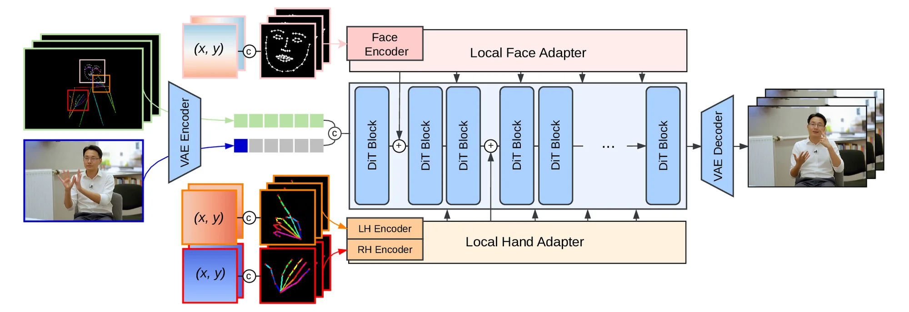

1CVSSP, University of Surrey, United Kingdom
Sign language video generation demands precise hand and facial articulation, yet modern video diffusion models, trained predominantly on spoken-language video, produce artifacts that render signing unintelligible. We propose SignRefine, a sign language video generation model that produces comprehensible signing from 2D keypoint conditioning alone, generalizing across appearances and visual conditions. Our approach builds on a pretrained video diffusion transformer and introduces local adapters with spatial grounding to selectively refine hand and face regions, steering the strong base model's prior toward accurate articulation. To enable this work and support broader sign language research, we present NVSign, a large-scale dataset of video content natively produced in sign language, offering diverse signer appearances, environments, and natural conversational settings. Trained on this data, our model shows up to 30% improvement in hand pose precision metrics over the strongest baseline and is preferred by sign language users for visual quality and comprehensibility in more than 80% of comparisons.
Sign languages are the primary means of communication for Deaf communities worldwide and video is their natural medium. Automatic sign language video generation is therefore a prerequisite for accessible content creation. Yet the field faces a stark duality: general-purpose video models generalize beautifully but cannot sign, while sign-specific models do not generalize.
SignRefine is built on Wan2.1-1.3B-Fun-Control, a pretrained video DiT conditioned on skeleton sequences. The full-body skeleton drives global body movement effectively, but the backbone lacks precision exactly where sign language needs it. We keep the backbone frozen, preserving its quality and generalization, and add trainable local adapters for hand and face regions. They extract regional conditions at higher resolution and inject them into selected DiT blocks through masked cross-attention.

Fig. 2 — A reference image and a full-body skeleton sequence guide the DiT backbone. Regional conditions for the face, left hand and right hand are processed by separate encoders and injected into the frozen backbone through trainable local adapters.
NVSign is a large-scale dataset of web video content natively produced in sign language: 44,759 signing segments sourced from 317 longer videos, in varied real-world environments with dynamic camera work. Roughly 40% of the data involves two or more participants, unlocking research directions that are impossible with single-signer corpora: multi-signer dynamics, turn-taking, signer diarisation, and non-manual features used as backchannels and discourse markers.
Each video ships with a comprehensive multi-modal annotation set — time-aligned English transcripts, extracted 2D body keypoints, per-signer activity scores, depth maps, SMPL body, MANO hand and FLAME face parameters. Three data partitions navigate different trade-offs between signer overlap and content diversity, enabling nuanced appearance-independent evaluation.
Each row shows the three methods driven by the same 2D keypoint sequence and reference frame. None of these clips, signers or scenes were seen during training, so the examples illustrate how the models generalize. Playback stops automatically to highlight the regional differences between models.
Because the goal is articulator quality, evaluation concentrates on regional metrics: MPJPE for keypoint accuracy and structural precision, LPIPS and SSIM for perceptual quality, computed on face and hand crops. NVSign appearance-independent test set, Phoenix14T and BSL Corpus are used for testing.
| Method | Face | Right Hand | Left Hand | ||||||
|---|---|---|---|---|---|---|---|---|---|
| MPJPE ↓ | LPIPS ↓ | SSIM ↑ | MPJPE ↓ | LPIPS ↓ | SSIM ↑ | MPJPE ↓ | LPIPS ↓ | SSIM ↑ | |
| NVSign | |||||||||
| SignGAN | 10.424 | 0.564 | 0.302 | 24.774 | 0.627 | 0.388 | 21.852 | 0.620 | 0.384 |
| SignViP | 10.576 | 0.534 | 0.356 | 23.957 | 0.581 | 0.428 | 24.383 | 0.588 | 0.424 |
| Wan-VACE | 4.067 | 0.422 | 0.367 | 15.904 | 0.525 | 0.380 | 15.431 | 0.503 | 0.407 |
| Wan-FC | 1.835 | 0.197 | 0.713 | 9.565 | 0.364 | 0.583 | 9.341 | 0.349 | 0.597 |
| SignRefine | 1.770 | 0.194 | 0.714 | 6.602 | 0.330 | 0.629 | 6.638 | 0.321 | 0.640 |
| Phoenix14T | |||||||||
| SignGAN | 5.457 | 0.585 | 0.343 | 28.507 | 0.707 | 0.469 | 25.373 | 0.657 | 0.470 |
| SignViP | 7.194 | 0.456 | 0.276 | 10.345 | 0.534 | 0.425 | 14.405 | 0.566 | 0.376 |
| Wan-VACE | 2.162 | 0.383 | 0.413 | 11.717 | 0.551 | 0.367 | 13.214 | 0.546 | 0.299 |
| Wan-FC | 1.151 | 0.223 | 0.688 | 5.754 | 0.402 | 0.629 | 5.719 | 0.374 | 0.642 |
| SignRefine | 0.916 | 0.214 | 0.701 | 4.582 | 0.386 | 0.660 | 5.101 | 0.366 | 0.668 |
| BSL Corpus | |||||||||
| SignGAN | 9.415 | 0.634 | 0.330 | 22.726 | 0.720 | 0.406 | 16.858 | 0.689 | 0.390 |
| SignViP | 28.222 | 0.626 | 0.289 | 23.085 | 0.611 | 0.381 | 22.111 | 0.593 | 0.372 |
| Wan-VACE | 3.172 | 0.436 | 0.380 | 17.524 | 0.567 | 0.351 | 15.385 | 0.557 | 0.338 |
| Wan-FC | 1.790 | 0.221 | 0.685 | 8.232 | 0.389 | 0.559 | 7.002 | 0.373 | 0.563 |
| SignRefine | 1.524 | 0.222 | 0.690 | 6.314 | 0.365 | 0.608 | 5.406 | 0.353 | 0.607 |
Table 1 — SignRefine is consistently outperforming the baselines on all the metrics. Gains are most pronounced on the hands — roughly a 30% reduction in MPJPE over the strongest baseline on NVSign, with face precision improving by up to 20% on Phoenix14T and 15% on BSL Corpus. Note the generalization pattern: SignViP, trained exclusively on Phoenix14T, collapses on NVSign and BSL Corpus, while SignRefine holds stable performance across all three without any dataset-specific adaptation.
Two studies complement the automated metrics. In the perceptual study, fifteen participants of varying BSL proficiency answered 17 questions each, ranking models by naturalness and hand/face quality, plus semantic fidelity against an English reference for intermediate-or-higher signers. SignRefine obtains the lowest mean rank overall and in every category (Table 2); SignRefine wins more than 83% of head-to-head comparisons against each baseline, giving the ordering Ours > Wan-FC > Wan-VACE > SignGAN ≈ SignViP. In the comprehension study, six fluent BSL signers wrote blind free-text translations of ten clips rendered by SignRefine and Wan-FC. Viewers of SignRefine recover more key content, land closer to the reference translation and abandon fewer clips as unintelligible (Table 3).
| Category | Ours | Wan-FC | Wan-VACE | SignViP | SignGAN |
|---|---|---|---|---|---|
| Overall ↓ | 1.22 | 1.89 | 2.46 | 3.56 | 3.41 |
| NVSign ↓ | 1.16 | 1.95 | 2.41 | 3.81 | 3.23 |
| Phoenix14T ↓ | 1.41 | 1.89 | 2.60 | 2.65 | 3.95 |
| Text Ref. ↓ | 1.16 | 1.63 | 2.44 | 3.76 | 3.22 |
Table 2 — Mean rank assigned by participants (1 = best, 5 = worst).
| Metric | Ours | Wan-FC |
|---|---|---|
| Keyword Recall ↑ | 0.54 | 0.30 |
| BLEURT ↑ | 0.31 | 0.19 |
| LLM adequacy ↑ | 2.07 | 1.50 |
| Failure Rate ↓ | 0.17 | 0.27 |
Table 3 — Comprehension study, SignRefine vs. Wan-FC.
This work was supported by EPSRC grant APP24554 (SignGPT — EP/Z535370/1), EPSRC grant APP78083 (UMCS — UKRI3927), and through funding from Google.org via the AI for Global Goals scheme. The authors acknowledge the use of Isambard-AI National AI Research Resource (AIRR), funded by UK DSIT via UKRI and STFC [ST/AIRR/I-A-I/1023]. This work reflects only the authors' views; the funders are not responsible for any use that may be made of the information it contains.
Placeholder entry — proceedings pages and DOI will be added once published.
@inproceedings{pelykh2026signrefine,
title = {SignRefine: Adapting Foundational Video Models
for Sign Language Generation},
author = {Pelykh, Anton and Fish, Edward and
Mercanoglu Sincan, Ozge and Bowden, Richard},
booktitle = {Proceedings of the European Conference on
Computer Vision (ECCV)},
year = {2026},
note = {To appear}
}